🌿 वृक्षदानातून निसर्गसेवा 🌿
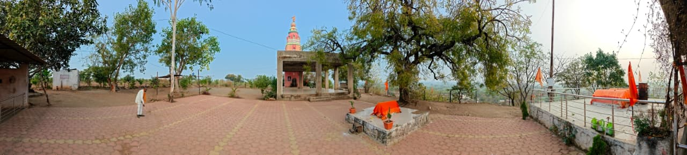
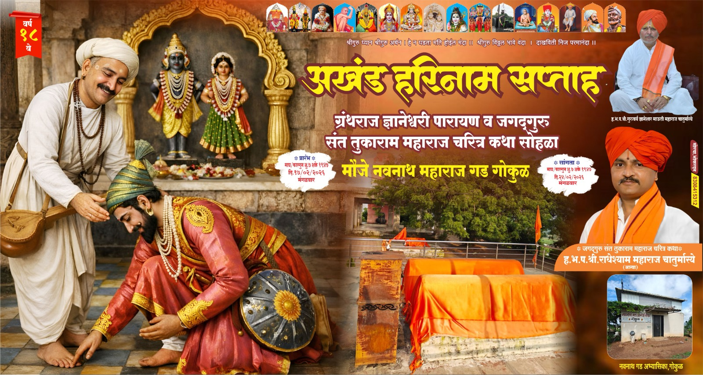
 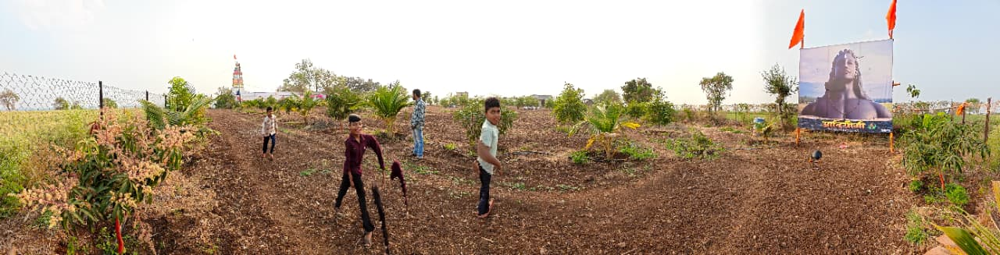
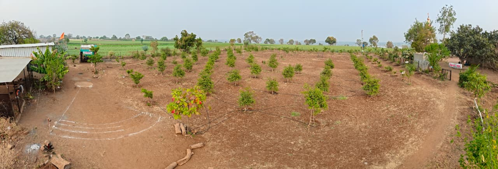
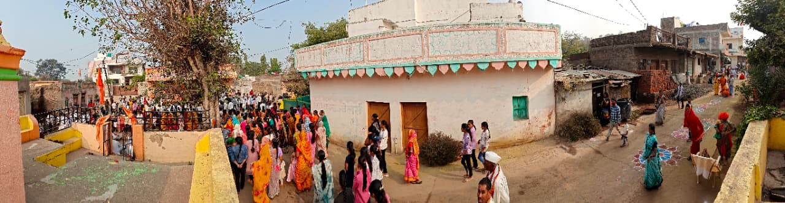
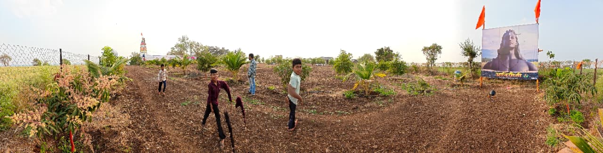
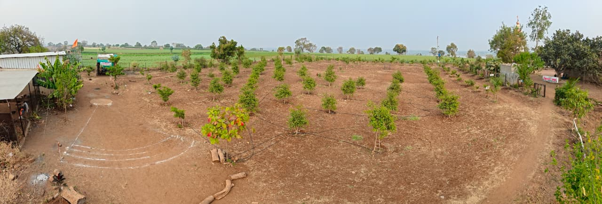
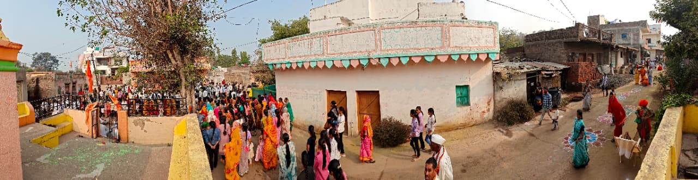
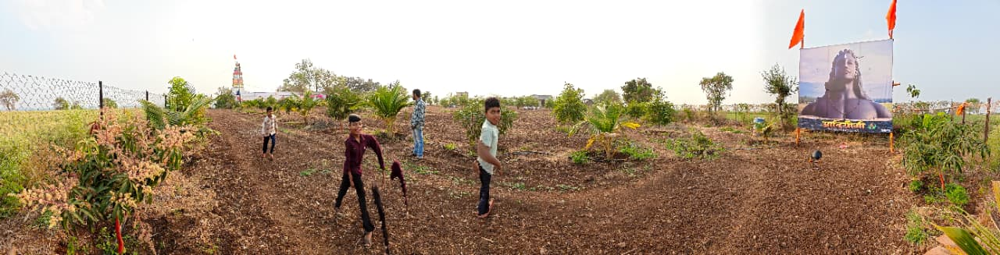
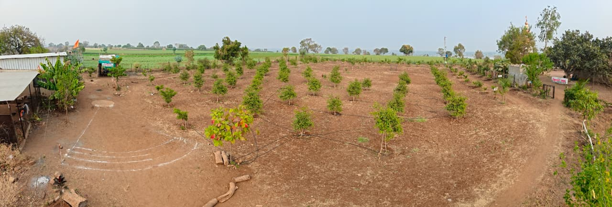
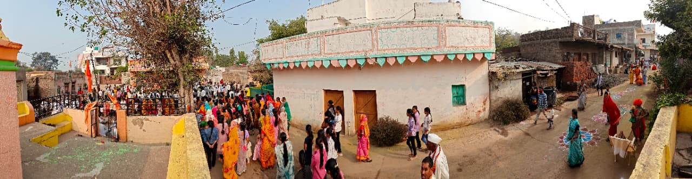
मु. गोकुळ ता. भोकरदन जि. जालना
email: navnathmaharajgokul@gmail.com
संपर्क : 9623467524
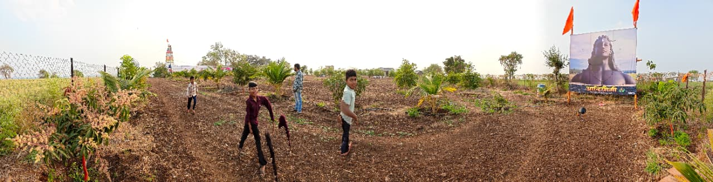
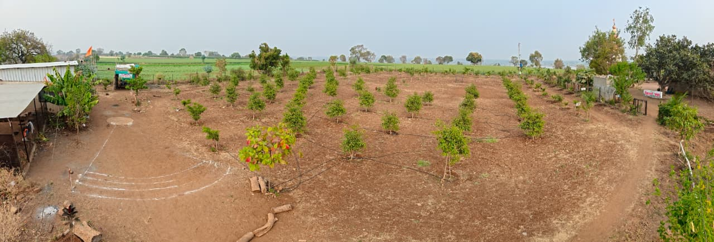
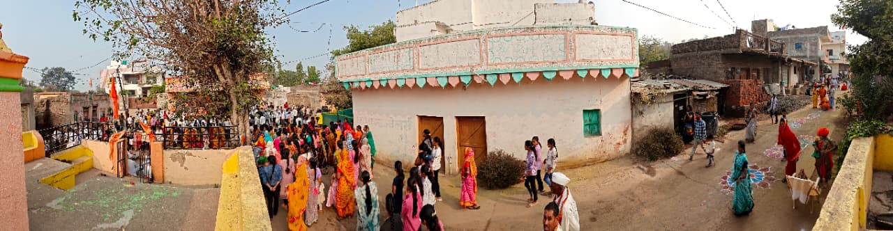
गोकुळ हे एक छोटेसे पण श्रद्धा, अध्यात्म आणि एकात्मतेने नटलेले गाव आहे. गावाच्या पायथ्याशी एक टोकाला वाहणारी पवित्र केळणा नदी आणि दुसऱ्या टोकाला उभी असलेली एक उंच , हिरवळीने नटलेली टेकडी हे गोकुळ गावाचे नैसर्गिक सौंदर्य वाढवतात. ही टेकडी केवळ भौगोलिक रचना नसून, ती गावकऱ्यांच्या श्रद्धेचे आणि आस्थेचे केंद्र आहे.
या पवित्र टेकडीवर श्री नवनाथ महाराजांची मूर्ती आणि पीर बाबांची समाधी एकाच ठिकाणी विराजमान आहेत. हे दृश्य गोकुळ गावाच्या संस्कृतीचे खरे प्रतीक आहे. येथे धर्म, जात, पंथ यांची भिंत नसून फक्त श्रद्धा आणि मानवतेचा संगम दिसतो.
श्री नवनाथ महाराज हे नाथ संप्रदायातील एक महान संत मानले जातात. त्यांचे तत्वज्ञान साधेपणा, संयम, भक्ती आणि सेवा यावर आधारित आहे. गोकुळ गावात नवनाथ महाराजांकडे लोक संकटमोचक, मार्गदर्शक आणि रक्षणकर्ता म्हणून पाहतात. अनेक भाविकांच्या अनुभवातून असे सांगितले जाते की, मनापासून केलेली प्रार्थना येथे नक्कीच फळ देते.
नवनाथ महाराजांची मूर्ती ही गावकऱ्यांसाठी केवळ एक प्रतिमा नसून, ती आशा, धैर्य आणि सकारात्मक ऊर्जेचा स्रोत आहे. दरवर्षी येथे विविध धार्मिक कार्यक्रम, उत्सव आणि मोठ्या भक्तिभावाने साजरी केली जाते.
योगदान : संतोष बाळा सुरडकर यांनी नवनाथ गडासाठी ५० वृक्ष (रोपे) दान दिली, त्यांच्या या सामाजिक व पर्यावरणपूरक उपक्रमाबद्दल गावकऱ्यांच्या वतीने मनःपूर्वक आभार व अभिनंदन.
[स्थळ : नवनाथ गड गोकुळ]
योगदान : श्री नाना भिवरजी महाकाळ यांनी नवनाथ गडासाठी ५० वृक्ष (रोपे) दान दिली, त्यांच्या या सामाजिक व पर्यावरणपूरक उपक्रमाबद्दल गावकऱ्यांच्या वतीने मनःपूर्वक आभार व अभिनंदन.
[स्थळ : नवनाथ गड गोकुळ]
योगदान : श्री कडुबा नामदेव शेळके यांनी नवनाथ गडासाठी ५० वृक्ष (रोपे) दान दिली, त्यांच्या या सामाजिक व पर्यावरणपूरक उपक्रमाबद्दल गावकऱ्यांच्या वतीने मनःपूर्वक आभार व अभिनंदन.
[स्थळ : नवनाथ गड गोकुळ]
Last Updated: Loading...
 +91 9623467524
+91 9623467524
 +91 9067633604
+91 9067633604